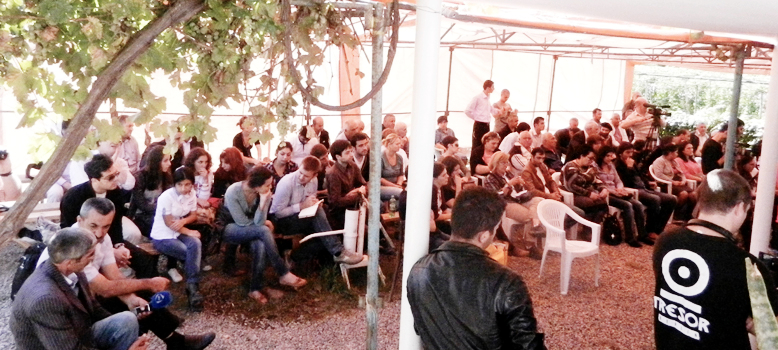

ПРОСТАЯ ИСТИНА ВЕЩЕЙ
Nothing is more precious than PEACE.
Nothing brings morе happiness.
Peace is the most basic starting point
for the advancement of humankind.
Daisaku Ikeda
Nothing brings morе happiness.
Peace is the most basic starting point
for the advancement of humankind.
Daisaku Ikeda
Я живу в нескольких минутах ходьбы от того места, где установлен камень, на котором высечены эти слова. Их автор – выдающийся японский религиозный философ, поэт и педагог Дайсаку Икеда. Я постоянно вчитываюсь в это изречение, и каждый раз эти строки все более и более вдохновляют меня вкладывать все больше усилий для продвижения идеи мира. 24 года, прожитые мною в Соединенных Штатах дали мне возможность широко взглянуть на этот вопрос, и не только из-за того, что нашествие преступных элементов, засевших в правительстве Американской империи, поставило все вопросы в плоскость белого и черного.
Мир, так же как и свобода, востребованы человечеством. И правительства делают всё, что в их силах, чтобы убедить нас в том, что и мир, и свобода возможны только при условии их существования, внушить нам, что мы не только нуждаемся в правительстве, но и должны поступиться некоторыми своими свободами, чтобы взамен получить некоторую предполагаемую безопасность.
Один из основателей Соединенных Штатов Бенджамин Франклин в 1759 г. исчерпывающе описал соотношение свободы и безопасности. Он сказал: «Тот, кто жертвует основополагающей Свободой ради некоторой временной Безопасности, не заслуживает ни Свободы, ни Безопасности.»
Мир, так же как и свобода, востребованы человечеством. И правительства делают всё, что в их силах, чтобы убедить нас в том, что и мир, и свобода возможны только при условии их существования, внушить нам, что мы не только нуждаемся в правительстве, но и должны поступиться некоторыми своими свободами, чтобы взамен получить некоторую предполагаемую безопасность.
Один из основателей Соединенных Штатов Бенджамин Франклин в 1759 г. исчерпывающе описал соотношение свободы и безопасности. Он сказал: «Тот, кто жертвует основополагающей Свободой ради некоторой временной Безопасности, не заслуживает ни Свободы, ни Безопасности.»

Да, это в точности то, чего требуют правительства от людей – отказаться от некоторых своих свобод, чтобы получить некоторую безопасность. Когда власти начинают чувствовать, что теряют полный контроль и общество начинает жить все более и более свободно, становясь по их мерке «чересчур процветающим». Они прибегают к старому как мир трюку, который называется: ПРОБЛЕМА-РЕАКЦИЯ-РЕШЕНИЕ.
Они создают ПРОБЛЕМУ и обвиняют в ней тех, кого хотят наказать (этот трюк, называют еще «Фальшивым флагом», был в событиях 9/11/2001 в Соединенных Штатах, и Сумгаитских погромах в бывшем Советском Союзе в феврале 1988 года.) Затем народ РЕАГИРУЕТ (в случае 11 сентября, народ потребовал от правительства убить террористов, в случае Сумгаитских погромов, армяне потребовали от Советских властей убить азербайджанцев). И конечно же правительство дает РЕШЕНИЕ (в США отбираются основопалагающие гражданские свободы и идет радикальное расширение Американской Империи, в «Сумгаитском деле» подавляется движение за независимость, и начинается война между Арменией и Азербайджаном).
Мы все погрязли в этом скверном обмане под названием ПРОБЛЕМА-РЕАКЦИЯ-РЕШЕНИЕ. Особенно – армяне и азербайджанцы. Наши многообещающие правительства держат нас под прессом своих пресловутых рычагов.
Гарри Браун чрезвычайно точно описывает взаимоотношения между правительством и народом. Он говорит: «Власти хороши лишь в одном: они знают, как сломать вам ноги, дать вам костыль и сказать: Смотрите, если бы всего этого не делалось для государства, вы бы не могли ходить!»
Нам нужно избавиться от подобного образа мышления, чтобы достичь своей мечты – жить в мире. Что касается меня, то я мечтаю о том, что в один прекрасный день три наших народа – армяне, азербайджанцы и грузины, будут иметь открытые границы, и, путешествуя между этими странами, если не обратите внимание на дорожную символику, вы не заметите, что выехали из одной и въехали в другую. Это вовсе не несбыточная мечта, она вполне может претвориться в жизнь, если все мы сплотимся вокруг идеи СВОБОДЫ.
Мой герой, Д-р Рон Пол, (он был кандидатом на президентских выборах в США в 2008 и 2012 годах от «партии мира») завершил свою потрясающую прощальную речь в Конгрессе 14 ноября 2012 года, (на мой взгляд, это – одно из величайших публичных выступлений всех времен и народов!), такими словами: «После многолетних усилий постичь “простую истину вещей” я пришел к твердому убеждению: Наилучшая возможность достичь мира и благоденствия для как можно большего числа людей во всем мире –предъявить требование СВОБОДЫ. Если вы сочтете это послание заслуживающим внимания, распространите его повсеместно.»
Я думаю, мы должны прислушаться к его совету. И я верю, что здесь, в Текали, мы как раз совершаем нечто подобное, и я буду продолжать это дело до последнего дня своей жизни.
Все мы действительно должны переосмыслить, каким должно быть правительство, и какова в действительности роль правительств. Многие великие умы прошлого предостерегали от ситуации «когда правительства слишком много» и говорили об опасности государственной власти как таковой. В своем романе «Дюна» Фрэнк Герберт сказал: «Все правительства подвержены повторяющейся проблеме: власть привлекает патологические личности. Не то чтобы власть коррумпирует, но она магнетически привлекательна для тех, кто хочет быть подкуплен».
Есть путь избежать этого: иметь правительство, которое действительно сформировано народом. Во всем мире не найдется ни одной страны, которая была бы по-настоящему демократичной, и где каждый, участвующий в выборах, был бы представлен во властных структурах. Рецепт преодоления подобного отсутствия представительства дал Паруйр Айрикян в своей последней работе, озаглавленной «На пути к абсолютной демократии».
Свое исследование Айрикян завершает словами, которые я считаю сердцевиной, сутью того, о чем мы сегодня здесь говорим. Он пишет: «Развитие цивилизации сопровождалось не только борьбой между племенами и расами, религиями и народами, между классами, борьбой различных культур, мировоззрений. Параллельно этому, внутри этих процессов, в качестве первичной категории шла борьба между двумя человеческими сущностями. Одна из них проявлялась в людях, считающих себя привелигированными и во имя этого пустого убеждения, способных на любое злодеяние. Им противостоял человек, убежденный в равенстве людей перед Создателем и во имя этого равенства готовый бороться за равноправие.»
Они создают ПРОБЛЕМУ и обвиняют в ней тех, кого хотят наказать (этот трюк, называют еще «Фальшивым флагом», был в событиях 9/11/2001 в Соединенных Штатах, и Сумгаитских погромах в бывшем Советском Союзе в феврале 1988 года.) Затем народ РЕАГИРУЕТ (в случае 11 сентября, народ потребовал от правительства убить террористов, в случае Сумгаитских погромов, армяне потребовали от Советских властей убить азербайджанцев). И конечно же правительство дает РЕШЕНИЕ (в США отбираются основопалагающие гражданские свободы и идет радикальное расширение Американской Империи, в «Сумгаитском деле» подавляется движение за независимость, и начинается война между Арменией и Азербайджаном).
Мы все погрязли в этом скверном обмане под названием ПРОБЛЕМА-РЕАКЦИЯ-РЕШЕНИЕ. Особенно – армяне и азербайджанцы. Наши многообещающие правительства держат нас под прессом своих пресловутых рычагов.
Гарри Браун чрезвычайно точно описывает взаимоотношения между правительством и народом. Он говорит: «Власти хороши лишь в одном: они знают, как сломать вам ноги, дать вам костыль и сказать: Смотрите, если бы всего этого не делалось для государства, вы бы не могли ходить!»
Нам нужно избавиться от подобного образа мышления, чтобы достичь своей мечты – жить в мире. Что касается меня, то я мечтаю о том, что в один прекрасный день три наших народа – армяне, азербайджанцы и грузины, будут иметь открытые границы, и, путешествуя между этими странами, если не обратите внимание на дорожную символику, вы не заметите, что выехали из одной и въехали в другую. Это вовсе не несбыточная мечта, она вполне может претвориться в жизнь, если все мы сплотимся вокруг идеи СВОБОДЫ.
Мой герой, Д-р Рон Пол, (он был кандидатом на президентских выборах в США в 2008 и 2012 годах от «партии мира») завершил свою потрясающую прощальную речь в Конгрессе 14 ноября 2012 года, (на мой взгляд, это – одно из величайших публичных выступлений всех времен и народов!), такими словами: «После многолетних усилий постичь “простую истину вещей” я пришел к твердому убеждению: Наилучшая возможность достичь мира и благоденствия для как можно большего числа людей во всем мире –предъявить требование СВОБОДЫ. Если вы сочтете это послание заслуживающим внимания, распространите его повсеместно.»
Я думаю, мы должны прислушаться к его совету. И я верю, что здесь, в Текали, мы как раз совершаем нечто подобное, и я буду продолжать это дело до последнего дня своей жизни.
Все мы действительно должны переосмыслить, каким должно быть правительство, и какова в действительности роль правительств. Многие великие умы прошлого предостерегали от ситуации «когда правительства слишком много» и говорили об опасности государственной власти как таковой. В своем романе «Дюна» Фрэнк Герберт сказал: «Все правительства подвержены повторяющейся проблеме: власть привлекает патологические личности. Не то чтобы власть коррумпирует, но она магнетически привлекательна для тех, кто хочет быть подкуплен».
Есть путь избежать этого: иметь правительство, которое действительно сформировано народом. Во всем мире не найдется ни одной страны, которая была бы по-настоящему демократичной, и где каждый, участвующий в выборах, был бы представлен во властных структурах. Рецепт преодоления подобного отсутствия представительства дал Паруйр Айрикян в своей последней работе, озаглавленной «На пути к абсолютной демократии».
Свое исследование Айрикян завершает словами, которые я считаю сердцевиной, сутью того, о чем мы сегодня здесь говорим. Он пишет: «Развитие цивилизации сопровождалось не только борьбой между племенами и расами, религиями и народами, между классами, борьбой различных культур, мировоззрений. Параллельно этому, внутри этих процессов, в качестве первичной категории шла борьба между двумя человеческими сущностями. Одна из них проявлялась в людях, считающих себя привелигированными и во имя этого пустого убеждения, способных на любое злодеяние. Им противостоял человек, убежденный в равенстве людей перед Создателем и во имя этого равенства готовый бороться за равноправие.»

Я пойду дальше и скажу, что каждый человек ведет такую борьбу внутри себя. И будет к месту вспомнить старинную притчу индейцев чероки:
«Старый индейский вождь, так учил своего внука науке жизни, когда тот пришел к нему гневе на своего друга, который поступил с ним несправедливо:
Позволь рассказать тебе историю. Когда-то и я ненавидел тех, кто хватал слишком много, не испытывая сожалений о своих поступках. Но ненависть истощает тебя, и не наносит вреда твоему врагу. Это похоже на то, как если бы ты принял яд, и при этом желал чтобы умер твой враг. Я долгие годы боролся с подобными чувствами.
- Борьба идет внутри меня,- сказал он юноше. - Это жестокая борьба, и она идет между двумя волками. Один из них – зло: зависть, сожаление, жадность, скупость, высокомерие, жалость к себе, негодование, лживость, ложная гордость, комплекс неполноценности и эгоизм. Другой волк – добро: мир, любовь, надежда, спокойствие, смирение, доброжелательность, сопереживание, благородство, правдивость, сострадание и вера. Та же борьба идет и в тебе, и в любом другом человеке.
Внук на минуту задумался над сказанным, и спросил: - Который же из волков победит?
Старый вождь ответил просто: - Тот, которого ты кормишь.»
Давайте кормить правильного волка и строить МИР.
Вреж Затикян
27-09-13
Текали
Грузия
«Старый индейский вождь, так учил своего внука науке жизни, когда тот пришел к нему гневе на своего друга, который поступил с ним несправедливо:
Позволь рассказать тебе историю. Когда-то и я ненавидел тех, кто хватал слишком много, не испытывая сожалений о своих поступках. Но ненависть истощает тебя, и не наносит вреда твоему врагу. Это похоже на то, как если бы ты принял яд, и при этом желал чтобы умер твой враг. Я долгие годы боролся с подобными чувствами.
- Борьба идет внутри меня,- сказал он юноше. - Это жестокая борьба, и она идет между двумя волками. Один из них – зло: зависть, сожаление, жадность, скупость, высокомерие, жалость к себе, негодование, лживость, ложная гордость, комплекс неполноценности и эгоизм. Другой волк – добро: мир, любовь, надежда, спокойствие, смирение, доброжелательность, сопереживание, благородство, правдивость, сострадание и вера. Та же борьба идет и в тебе, и в любом другом человеке.
Внук на минуту задумался над сказанным, и спросил: - Который же из волков победит?
Старый вождь ответил просто: - Тот, которого ты кормишь.»
Давайте кормить правильного волка и строить МИР.
Вреж Затикян
27-09-13
Текали
Грузия

Кавказский Центр Миротворческих Инициатив

© Ассоциация Текали - info@southcaucasus.com